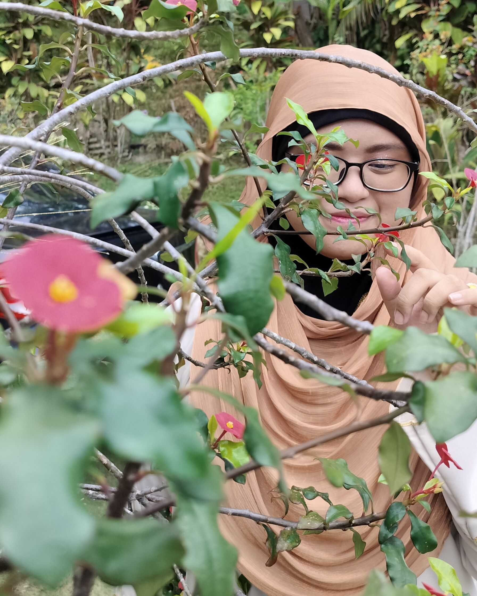

|  |
About MeMy name is Balqis Binti Arazaman and I am 22 years old. I am currently studying at Universiti Malaysia Perlis (UniMAP)
to get my bachelors degree in New Media Communication. I love taking pictures, capturing the moment and storing the memories
that can last forever.
|
|
A photographer (the Greek φῶς (phos), meaning "light", and γραφή (graphê), meaning "drawing, writing", together meaning "drawing with light") is a person who uses a camera to make photographs. They often take pictures of people, but they also photograph outdoor locations, artwork, animals, and a wide range of other subjects. Photographers may take pictures for their own use, or they may be hired by individuals, groups, or companies. To become a photographer, the individual should have a good sense of detail, patience, adaptability, good interpersonal skills, excellent communication skills and passion. |